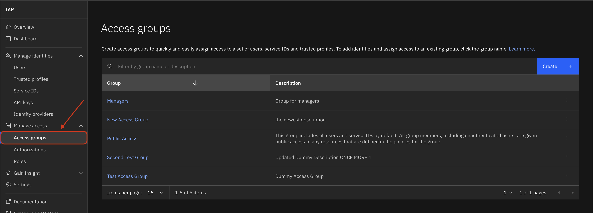

Access Groups#
An access group is a resource that can be used for assigning policies/roles to a group of members (Users, Trusted Profile, Service IDs). Access group management is a platform level service in IBM Cloud that enables you to manage access groups under your account. The SDK provides functionality to interact with the access group API.
- This includes operations such as:
Listing all access groups under the current Account
Creating a new access group
Updating an existing access group
Deleting an existing access group
Listing all Access Groups#
In the IBM Cloud UI, you can view a list of all access groups under the current account by navigating Manage -> Access (IAM) -> Access Groups.
{kind=link}
Access groups can be retrieved by using the Platform.access_groups property.
This property returns a AccessGroups object, which is a collection of AccessGroup objects.
>>> access_groups = platform.access_groups
>>> access_groups
[
AccessGroup(name='Developers', description='access group for Developers'),
AccessGroup(name='Managers', description='Group for managers'),
AccessGroup(name='New access group', description='the newest description'),
AccessGroup(name='Public Access', description='This group includes all users and service IDs by default. All group members, including unauthenticated users, are given public access to any resources that are defined in the policies for the group.'),
AccessGroup(name='Second Test Group', description='Updated Dummy Description'),
AccessGroup(name='Test access group', description='Dummy access group')
]
Get an Access Group#
To get a specific access group using the SDK, provide the access_group_id as a filter to the Platform.access_groups by using the AccessGroups.get() function.
This function will return a AccessGroup object if the requested access group was found.
>>> access_groups = platform.access_groups
>>> access_groups.get(access_group_id="AccessGroupId-d9a16887-8e76-4478-bb00-35534fdd91e2")
AccessGroup(name='Test Access Group' description='Dummy Access Group')
Create an Access Group#
In the IBM Cloud UI, you can create a new access group by clicking the blue Create + button on the top right of the pane.
The two fields to be filled in are the Name and Description fields.
{kind=link}
{kind=link}
An access group can be created by passing in a name and description to the Platform.create_access_group() method.
This method returns a newly minted AccessGroup object.
>>> developers_access_group = platform.create_access_group(name="Developers", description="access group for Developers")
>>> developers_access_group
AccessGroup(name='Developers', description='access group for Developers')
Update an Access Group#
In the IBM Cloud UI, you can update an existing access group by clicking on the name of the access group you would like to update.
That opens up a new page with more details about the members, policies, and rules for the access group.
You then have to navigate to Actions -> Edit to open a popup pane. There you have to provide the updated Name or Description fields.
{kind=link}
{kind=link}
An access group can be updated by first updating the name and description fields of an existing AccessGroup object.
Following that, the updated AccessGroup object must be passed to the Platform.update_access_group() method.
This method returns an API response, whose status code should be <200> if the access group was successfully updated.
>>> developers_ag.name = "New Name"
>>> developers_ag.description = "New Description"
>>> platform.update_access_group(developers_ag)
<Response [200]>
Delete an Access Group#
In the IBM Cloud UI, you can delete an access group by clicking on the three buttons to the right of the access group you would like to delete.
That opens up a dropdown with a Remove button. Clicking that button opens a popup that asks you to confirm if you’d like to delete said access group.
{kind=link}
{kind=link}
An access group can be deleted through the SDK by passing an AccessGroup object to the Platform.delete_access_group() method.
This method returns an API response, whose status code should be <204> if the access group was successfully deleted.
>>> platform.delete_access_group(developers_ag)
<Response [204]>
Get Member of an Access Group#
You can view membership information of an Access Group in the IBM Cloud UI by clicking on the desired access group’s name. This will load a new page with multiple tabs. The Users tab lists IBM Cloud Users with membership to the selected access group.
The Service ID tab lists Service IDs with membership to the selected access group. The Trusted Profiles tab lists Trusted Profiles with membership to the selected access group.
In the SDK, all current members of the selected access group can be retrieved by calling the AccessGroup.get_access_group_members() function.
This function outputs a list of UserProfile, TrustedProfile, and ServiceID objects that correspond to the members in the selected access group.
>>> developers_ag.get_access_group_members()
[ServiceID(id='ServiceId-b6820268-5f8b-4d9b-b46e-1b99d05dea2f', name='Fifth Test Service ID')]
Add Member(s) to Access Group#
To add a member to an Access Group in the UI, you must select the desired access group, navigate to the tab for the type of member you would like to add (one of Users, Service ID, or Trusted Profile),
and add the details of the new member to assign them membership to the selected Access Group.
{kind=link}
{kind=link}
{kind=link}
In the SDK, to add a member to the desired access group, either pass an individual member or a list of members (of types UserProfile, TrustedProfile, or ServiceID) to the
AccessGroup.add_members_to_access_group() function. This will add the specified member(s) to the desired Access Group and returns an API response, whose status code should be <200> if the member(s) were successfully added.
>>> user = platform.users.get(iam_id="IBMid-6XXXXXXXXP")
>>> developers_access_group.add_members_to_access_group(user)
{'members': [{'iam_id': 'IBMid-XXXXXXXXXX', 'type': 'user', 'created_at': '2025-08-01T09:27:12Z', 'created_by_id': 'IBMid-XXXXXXXXXX', 'status_code': 200}]}
Remove Member(s) from Access Group#
To remove a member from an Access Group in the UI, you must select the desired access group, navigate to the tab for the type of member you would like to remove (one of Users, Service ID, or Trusted Profile),
select the member(s) to remove, and then click the remove button in the top right corner. Confirm the removal of the member(s) on the following popup.
{kind=link}
In the SDK, to remove a member from the desired access group, either pass an individual member of a list of members (of types UserProfile, TrustedProfile, or ServiceID) to the
AccessGroup.remove_members_from_access_group() function. This will remove the specified member(s) from the desired Access Group and return an API response, whose status code should be <204> if the member(s) were successfully removed.
>>> user = platform.users.get(iam_id="IBMid-6XXXXXXXXP")
>>> developers_access_group.remove_members_from_access_group(user)
{'access_group_id': 'AccessGroupId-5f54b267-927f-442a-97fd-6ed4581d6998', 'members': [{'iam_id': 'IBMid-6XXXXXXXX0', 'status_code': 204}]}
Check Membership to an Access Group#
To check the membership of a certain member (of types UserProfile, TrustedProfile, or ServiceID),
clicking on the desired access group will display all members of each member type with membership to the Access Group.
{kind=link}
In the SDK, to check if an individual member (of types UserProfile, TrustedProfile, or ServiceID) possesses membership to an Access Group,
pass the member to the AccessGroup.check_membership() function. This will return an API response, whose status should be <204> if the member does posses membership to the specified access group and <404> if it does not possess membership.
>>> user = platform.users.get(iam_id="IBMid-6XXXXXXXXP")
>>> developers_access_group.check_membership(user)
<Response [204]>
Add Member to Multiple Access Groups#
To add a member to multiple access groups in the UI, once on the IAM landing page you must navigate to the desired member type (one of Users, Service ID, or Trusted Profile). Once the member type has been selected, Service ID for this example, select the desired member.
On the following page, navigate to Assign Group, then select the groups to add the member to.
{kind=link}
{kind=link}
{kind=link}
{kind=link}
In the SDK, to add a member to multiple groups, pass the member (of types UserProfile, TrustedProfile, or ServiceID) to
the Platform.add_member_to_multiple_access_groups() method along with a list of AccessGroup objects which represent the Access Groups the member should be added to.
This will return an API response, whose status should be <200> for each access group the member was successfully added to.
>>> user = platform.users.get(iam_id="IBMid-6XXXXXXXXP")
>>> access_groups = [platform.access_groups.get(access_group_id="AccessGroupId-5f54b267-927f-442a-97fd-6ed4581d6998"), platform.access_groups.get(access_group_id="AccessGroupId-f31bb98a-a2c3-4281-8d54-073a129d071f")]
>>> platform.add_member_to_multiple_access_groups(user, access_groups)
{'groups': [{'access_group_id': 'AccessGroupId-5f54b267-927f-442a-97fd-6ed4581d6998', 'status_code': 200}, {'access_group_id': 'AccessGroupId-f31bb98a-a2c3-4281-8d54-073a129d071f', 'status_code': 200}]}
Remove Member from All Access Groups#
To remove a member from all access groups in the SDK, (of types UserProfile, TrustedProfile, or ServiceID) to
the Platform.remove_member_from_all_access_groups() method. This will return an API response, whose status should be <204> for each access group the user was successfully removed from in the account.
>>> user = platform.users.get(iam_id="IBMid-6XXXXXXXXP")
>>> platform.remove_member_from_all_access_groups(user)
{'iam_id': 'IBMid-6XXXXXXXXP', 'groups': [{'access_group_id': 'AccessGroupId-5f54b267-927f-442a-97fd-6ed4581d6998', 'status_code': 204}, {'access_group_id': 'AccessGroupId-7b0be36f-dbea-42d1-9c8e-e962796a30f7', 'status_code': 204}]}